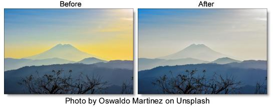

Selective Saturation
Description
The saturation of the image can be adjusted independently in the shadows, midtones and highlights.
Category
Color.
Controls
Presets
To select a preset, pick one from the Presets window.
Shadows
Saturation
Adjusts the saturation of the image in the shadows. Positive values saturate, negative values desaturate.
Position
Selects the shadow values to be adjusted.
Range
Controls the range of values to be used for the shadows. A higher Range value considers more values as shadows.
Midtones
Saturation
Adjusts the saturation of the image in the midtones. Positive values saturate, negative values desaturate.
Position
Selects the midtones values to be adjusted.
Range
Controls the range of values to be used for the midtones. A higher Range value considers more values as midtones.
Highlights
Saturation
Adjusts the saturation of the image in the highlights. Positive values saturate, negative values desaturate.
Position
Selects the highlight values to be adjusted.
Range
Controls the range of values to be used for the highlights. A higher Range value considers more values as highlights.
Go to the
Matte section of Common Filter Controls to see how the Position and Range controls work.